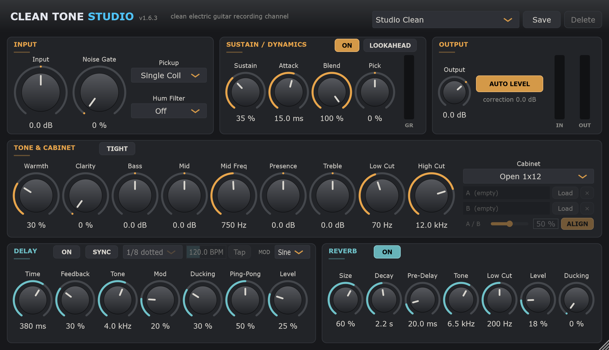
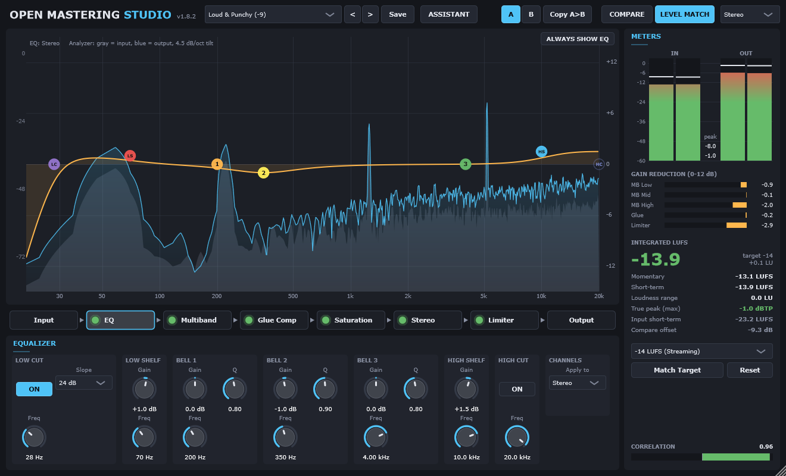

Free audio plugins for recording, mixing and mastering
Three channel strips for Windows, from the first take to the finished master. Each is a VST3 plugin for your DAW and a standalone app, free to use for anything, and open source.
Linux testers wanted: all three now have an experimental Linux version (64-bit; VST3, LV2 and the standalone app): Open Vocal Studio, Clean Tone Studio and Open Mastering Studio. If you try one, please tell us how it went in its "Linux beta" discussion on GitHub or at openstudio.plugins@gmail.com.

Open Vocal Studio
A complete lead-vocal channel: neural noise removal, natural pitch correction, de-essing and resonance control, tone, dynamics, and plate or room reverb.
See Open Vocal Studio →
Clean Tone Studio
A recording channel for clean guitar: pickup voicings, a smooth sustain compressor, tube warmth, cabinets and IRs, a tape-style delay and a lush reverb.
See Clean Tone Studio →
Open Mastering Studio
A complete mastering chain: EQ, multiband and glue compression, saturation, stereo width, a true-peak limiter and loudness metering, with an assistant that sets it up for you.
See Open Mastering Studio →What they have in common
One family, built the same way.
Free and open
No price, no account, no license key. Released under the GNU AGPLv3, with the full source code on GitHub.
Plugin and app
A VST3 plugin for your DAW and a standalone app for Windows (64-bit), with ASIO support.
Fair comparisons
Compare processed and original at matched loudness, so louder never fools you into thinking it's better.
Measured
Tested for clicks, aliasing, latency, recall and real-time safety, including with THE_LAB, Phil Speiser's plugin measurement app.